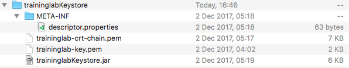
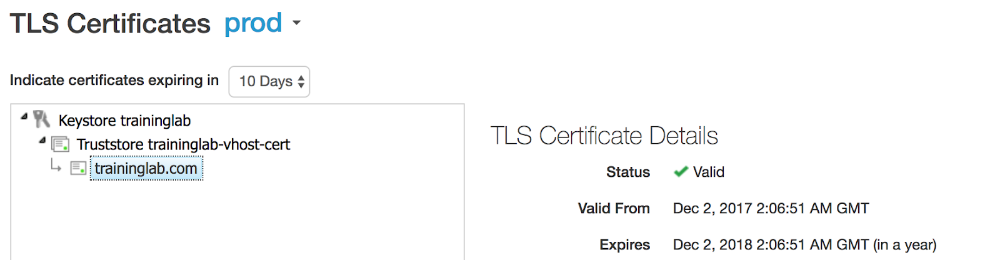
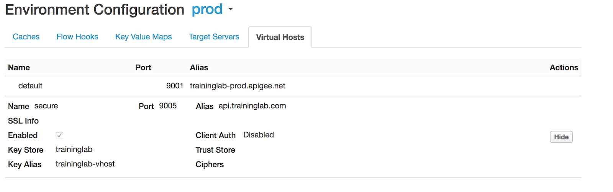
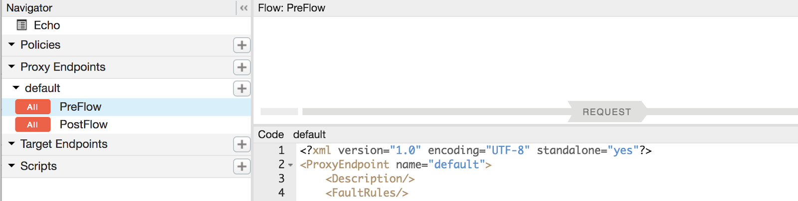
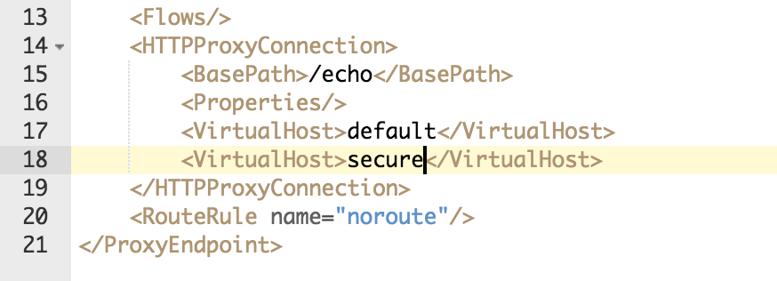
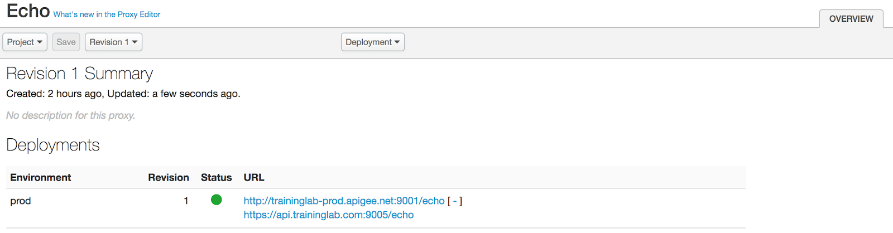
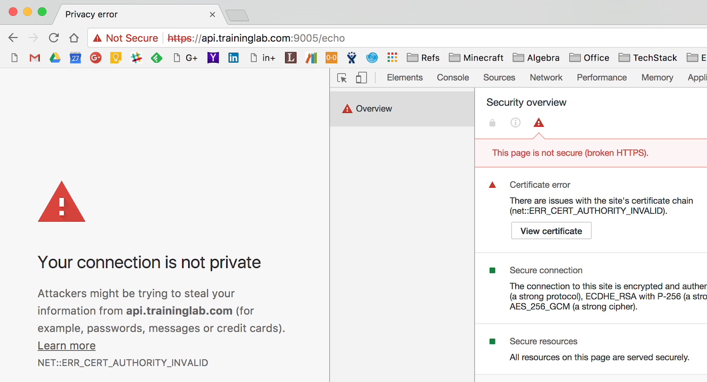
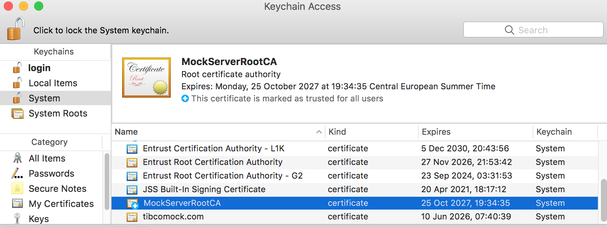
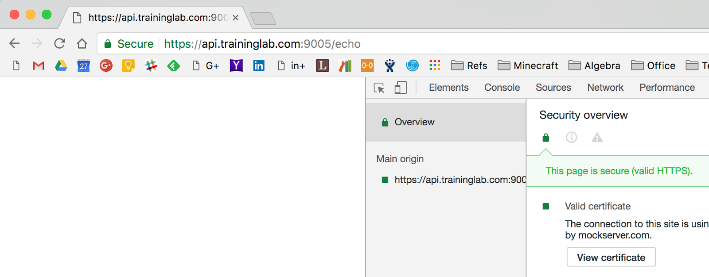

The Lab will walk you through the following tasks:
This Codelab guides you through the hands-on experience of generating self-signed certificates and its deployment into the VHost object of Apigee Edge.
Even that this lab is tailored to an On-premises Edge installation, it is applicable to Apigee Cloud as well.
We assume that traininglab organization that has prod environment are provisioned and that two virtual hosts are created in the prod environment:
default | 9001 | traininglab-prod.apigee.net |
secure | 9005 | api.traininglab.com |
You can define/create your CA authority on any of the systems, Linux/Unix or Windows.
The most trouble-free way to do it, is on your Linux box. I.e., Node 1, in the root home (~) directory.
If done on Windows, you are recommended to download and install openssl utility. You also need to have a Java SDK installed to have an access to jar utility.
Prerequisite for Windows: openssl utility; download it from https://indy.fulgan.com/SSL/openssl-1.0.2l-i386-win32.zip
1. CA admin: Create a directory edge-tls that will contains CA folders. In your project working folder, edge-tls, create folder rootca and go into it.
cd <your-working-folder>/edge-tls mkdir rootca cd rootca
2. CA admin: In the rootca folder, setup ca folders and serial numbers for certificates, crl, and init the index.db file.
mkdir ca echo "1001" > ca/serial echo "1001" > ca/crlnumber touch ca/index.db mkdir ca-certs
3. CA admin: Generate CA's private key.
openssl genrsa -aes256 -out ca/rootca-key.pem 2048 Pass phrase: MockServer123
4. CA admin: For a number of certificate-related operations, it is tedious to use command-line options. The .conf file eases the burden.
Create ca.conf file in the edge-tls/rootca folder with following contents:
dir = .
[ ca ]
default_ca = root_ca
[ root_ca ]
database = $dir/ca/index.db
serial = $dir/ca/serial
crlnumber = $dir/ca/crlnumber
certificate = $dir/ca-certs/rootca-crt.pem
private_key = $dir/ca/rootca-key.pem
new_certs_dir = $dir/ca-certs
default_days = 365
default_md = sha256
default_crl_days = 30
email_in_dn = no
unique_subject = no
crl_extensions = ca_crl_ext
x509_extensions = ca_req_ext
policy = MatchingPolicy
[ req ]
default_bits = 2048
encrypt_key = no # non-prod
default_md = sha256
utf8 = yes
string_mask = utf8only
prompt = yes # Prompt for DN input
distinguished_name = ca_dn # How to handle the distinguished name when requesting a certificate
x509_extensions = ca_req_ext # X.509 extensions to use when requesting a certificate
[ ca_dn ]
countryName = Country Name (2 letter code)
countryName_default = UK
stateOrProvinceName = State or Province Name (full name)
stateOrProvinceName_default = England
localityName = Locality Name (eg, city)
localityName_default = Kingston
organizationName = Organization Name (eg, company)
organizationName_default = Mock Server Ltd.
organizationalUnitName = Organizational Unit Name (eg, section)
organizationalUnitName_default = Security Dept
commonName = Common Name
emailAddress = Contact email for this Certificate
emailAddress_default = admin@mockserver.com
[ MatchingPolicy ]
countryName = match # Must match CA's countryName
stateOrProvinceName = optional # optional input
localityName = optional # optional input
organizationName = supplied # Must supply organizationName
organizationalUnitName = optional # optional input
commonName = supplied # Must be supplied
emailAddress = supplied # supplied for contact purposes
[ ca_req_ext ]
basicConstraints = critical, CA:true
keyUsage = critical, keyCertSign, cRLSign
subjectKeyIdentifier = hash
authorityKeyIdentifier = keyid:always
authorityInfoAccess = OCSP;URI:http://ocsp.mockserver.com:3000, caIssuers;URI:http://ocsp.mockserver.com:3000/rootCA.crt
crlDistributionPoints = URI:http://ocsp.mockserver.com:3000/rootCRL.crl
[ server_req_ext ]
basicConstraints = CA:FALSE
keyUsage = critical,digitalSignature,keyEncipherment
extendedKeyUsage = serverAuth, clientAuth
subjectKeyIdentifier = hash
authorityInfoAccess = OCSP;URI:http://ocsp.mockserver.com:3000, caIssuers;URI:http://ocsp.mockserver.com:3000/rootCA.crt
crlDistributionPoints = URI:http://ocsp.mockserver.com:3000/rootCRL.crl
[ client_req_ext ]
basicConstraints = CA:FALSE
keyUsage = critical,digitalSignature
extendedKeyUsage = clientAuth
subjectKeyIdentifier = hash
authorityKeyIdentifier = keyid,issuer
authorityInfoAccess = OCSP;URI:http://ocsp.mockserver.com:3000, caIssuers;URI:http://ocsp.mockserver.com:3000/rootCA.crt
crlDistributionPoints = URI:http://mockserver.com:3000/rootCA.crl
[ ca_crl_ext ]
authorityKeyIdentifier = keyid:always
authorityInfoAccess = caIssuers;URI:http://ocsp.mockserver.com:3000/rootCA.crt
[ ca_ocsp_ext ]
basicConstraints = CA:FALSE
keyUsage = critical, digitalSignature
extendedKeyUsage = critical, OCSPSigning
subjectKeyIdentifier = hash
authorityKeyIdentifier = keyid:always5. CA admin: Using CA key, generate a CA certificate.
openssl req -config ca.conf -x509 -new -nodes -key ca/rootca-key.pem -out ca-certs/rootca-crt.pem -days 3650 ... Country Name (2 letter code) [UK]: State or Province Name (full name) [England]: Locality Name (eg, city) [Kingston]: Organization Name (eg, company) [Mock Server Ltd.]: Organizational Unit Name (eg, section) [Security Dept]: Common Name []:mockserver.com admin@mockserver.com [admin@mockserver.com]:
6. CA admin: Verify root CA certificate
openssl x509 -noout -text -in ca-certs/rootca-crt.pem
1. In the edge-tls/rootca directory folders for server key, request and certificates.
mkdir server mkdir server-certs
2. Go to server folder.
cd server
3. Server Admin: Prepare .conf file contents for the server certificate, file server-api-traininglab.conf in the rootca folder:
[ req ]
default_bits = 2048
prompt = no
default_md = sha256
req_extensions = req_ext
distinguished_name = dn
[ dn ]
C=UK
ST=Surrey
L=Guildford
O=Training Lab Ltd
OU=API Team
emailAddress=admin@traininglab.com
CN = traininglab.com
[ req_ext ]
subjectAltName = @alt_names
[ alt_names ]
DNS.1 = api.traininglab.com
DNS.2 = api.traininglab.co.uk4. Server Admin: While in rootca, generate the key. Use password: TrainingLab2017
openssl genrsa -aes256 -out server/traininglab-key.pem 2048
5. Server Admin: Generate Certificate Signing Request, CSR.
openssl req -config server-api-traininglab.conf -key server/traininglab-key.pem -out server/traininglab-csr.pem -days 3650 -new -sha256
1. CA Admin: Inspect certificate, extract SANs for the following step.
openssl req -noout -text -in server/traininglab-csr.pem
2. CA Admin: Validate SAN names. Inspect extensions section.
Requested Extensions:
X509v3 Subject Alternative Name:
DNS:api.traininglab.com, DNS:api.traininglab.co.uk3. CA Admin: Prepare configuration file to sign server request with required SAN section.
Clone ca.conf file to ca-san-traininglab.conf.
cp ca.conf ca-san-traininglab.conf
4. CA Admin: Add fragment to the end of section [ server_req_ext ] after the line with crlDistributionPoints setting:
subjectAltName = @alt_names
[ alt_names ]
DNS.1 = api.traininglab.com
DNS.2 = api.traininglab.co.uk5. CA Admin: Perform sign operation.
openssl ca -config ca-san-traininglab.conf -extensions server_req_ext -in server/traininglab-csr.pem -out server-certs/traininglab-crt.pem
Enter the rootca-key.pem password MockServer123.
Say y to Sign the certificate? question.
Say y to 1 out of 1 certificate requests certified, commit? question.
1. Server Admin: Verify certificate
openssl x509 -noout -text -in server-certs/traininglab-crt.pem
Notice in the output:
X509v3 extensions:
X509v3 Extended Key Usage:
TLS Web Server Authentication, TLS Web Client Authentication
X509v3 Subject Alternative Name:
DNS:api.traininglab.com, DNS:api.traininglab.co.uk2. Server Admin: Verify chain of trust
openssl verify -CAfile ca-certs/rootca-crt.pem server-certs/traininglab-crt.pem server-certs/traininglab-crt.pem: OK
1. Make a folder for a jar file server-certs/traininglabKeystore
2. Go to the folder
3. In the folder, create: sub-folder META-INF
4. Concatenate whole certificate chain server-certs/traininglab-crt.pem and ca-certs/rootca-crt.pem into traininglab-crt-chain.pem file
cat server-certs/traininglab-crt.pem ca-certs/rootca-crt.pem > server-certs/traininglabKeystore/traininglab-crt-chain.pem
5. Copy the server/traininglab-key.pem in this folder.
6. In the META-INF create the descriptor.properties file and add following lines:
certFile=traininglab-crt-chain.pem
keyFile=traininglab-key.pem7. Inside the traininglabKeystore folder run commands
jar -cf traininglabKeystore.jar traininglab-crt-chain.pem traininglab-key.pem jar -uf traininglabKeystore.jar META-INF/descriptor.properties
The contents of the traininglabKeyStore folder should look like:

1. Configure the contents of ~/.netrc file so that you can use -n curl option
Enter use IP of your MS node, email and password of Edge administrator.
machine 52.55.223.129 login admin@exco.com password Apigee123!
2. Verify that you can execute MS Management API calls by fetching the list of planet organisations.
$ curl -n http://10.132.0.9:8080/v1/o [ "VALIDATE", "org" ]
1. Create the keystore object
curl -H "Content-Type: text/xml" http://52.55.223.129:8080/v1/o/traininglab/environments/prod/keystores -d "<KeyStore name=\"traininglab\"/>" -n
Output:
{
"certs" : [ ],
"keys" : [ ],
"name" : "traininglab"
}2. Validate that the keystore object is created.
curl http://52.55.223.129:8080/v1/o/traininglab/environments/prod/keystores -n
Output:
[ "traininglab" ]3. Upload a JAR file to a Keystore API
curl -X POST -H "Content-Type: multipart/form-data" -F file="@traininglabKeystore.jar" "http://52.55.223.129:8080/v1/o/traininglab/environments/prod/keystores/traininglab/keys?alias=traininglab-vhost&password=TrainingLab2017" -n
4. Verify the keystore
curl http://52.55.223.129:8080/v1/o/traininglab/environments/prod/keystores/traininglab -n
Output:
{
"certs" : [ "traininglab-vhost-cert" ],
"keys" : [ "traininglab-vhost" ],
"name" : "traininglab"
}1. Create Virtual Host using Management API command.
curl -n -X POST -H "Content-Type: application/json" -d '{
"hostAliases": [
"api.traininglab.com"
],
"interfaces": [],
"name": "secure",
"port": "9005",
"sSLInfo": {
"ciphers": [],
"clientAuthEnabled": "false",
"enabled": "true",
"ignoreValidationErrors": false,
"keyAlias": "traininglab-vhost",
"keyStore": "traininglab",
"protocols": []
}
}' "http://52.55.223.129:8080/v1/organizations/traininglab/environments/prod/virtualhosts"
Output:
{
"hostAliases" : [ "api.traininglab.com" ],
"interfaces" : [ ],
"listenOptions" : [ ],
"name" : "secure",
"port" : "9005",
"sSLInfo" : {
"ciphers" : [ ],
"clientAuthEnabled" : "false",
"enabled" : "true",
"ignoreValidationErrors" : false,
"keyAlias" : "traininglab-vhost",
"keyStore" : "traininglab",
"protocols" : [ ]
}
}2. Verify training lab keystore configuration using Edge UI.
Navigate to Admin/TLS Certificates

3. Verify Secure Virtual Host configuration using Edge UI.
Navigate to APIs/Environment Configuration, Virtual Hosts. Click on Show of secure VHost.

1. Using APIs/API Proxies, open Echo proxy editor.
2. Switch to DEVELOP tab.
3. Verify that the PreFlow event of the default Proxy Endpoint is active.

4. Using XML Editor, add <VirtualHost>secure</VirtualHost> element to the end of the <HTTPProxyConnection/> element

5. Press the Save button. Confirm to Save Revision dialog.
6. Click on the OVERVIEW tab and verify that Echo proxy is deployed into correct virtual hosts.

1. For TLS-enables endpoints, we cannot use IP address as a hostname. Add router's public IP address on your node 1 to the /etc/hosts file
34.207.96.3 api.traininglab.com2. Check the connection, run ping api.traininglab.com
$ ping api.traininglab.com
PING api.traininglab.com (34.207.96.3): 56 data bytes
64 bytes from 34.207.96.3: icmp_seq=0 ttl=64 time=0.047 ms
64 bytes from 34.207.96.3: icmp_seq=1 ttl=64 time=0.058 ms
64 bytes from 34.207.96.3: icmp_seq=2 ttl=64 time=0.150 ms
^C1. Try to run curl command to the /echo endpoint "as is", i.e., without any certificates. IF your root certificate is not trusted on a system level, then you will see:
$ curl -v https://api.traininglab.com:9005/echo
* Trying 34.207.96.3...
* TCP_NODELAY set
* Connected to api.traininglab.com (34.207.96.3) port 9005 (#0)
* SSL certificate problem: Invalid certificate chain
* Curl_http_done: called premature == 1
* Closing connection 0
curl: (60) SSL certificate problem: Invalid certificate chain
More details here: https://curl.haxx.se/docs/sslcerts.html2. Provide trust certificate chain to validate our server certificate.
$ curl --cacert ca-certs/rootca-crt.pem -v https://api.traininglab.com:9005/echo
* Trying 34.207.96.3...
* TCP_NODELAY set
* Connected to api.traininglab.com (34.207.96.3) port 9005 (#0)
* TLS 1.2 connection using TLS_ECDHE_RSA_WITH_AES_256_GCM_SHA384
* Server certificate: traininglab.com
* Server certificate: mockserver.com
> GET /echo HTTP/1.1
> Host: api.traininglab.com:9005
> User-Agent: curl/7.51.0
> Accept: */*
>
< HTTP/1.1 200 OK
< Date: Sat, 02 Dec 2017 04:09:06 GMT
< Content-Length: 0
< Connection: keep-alive
< Host: api.traininglab.com:9005
< X-Forwarded-For: 86.134.79.188
< X-Forwarded-Port: 9005
< X-Forwarded-Proto: https
< User-Agent: curl/7.51.0
< Accept: */*
< Server: Apigee Router
<
* Curl_http_done: called premature == 0
* Connection #0 to host api.traininglab.com left intact
bash-3.2$ 1. Using Chrome, try to hit the echo proxy.

1. Open Keychain Access utility (Cmd+Space, keychain...)
2. Select System Keychain on the left.
3. Select File/Import Items...
4. Select 'our company's chain trust, rootca-crt.pem file and Press Open button.
5. Type your password to allow the operation. Click Modify keychain button.
6. Double-click imported certificate; Open Trust sub-tree and change When Using this certificate combo-box item to Always Trust.
7. Close the window and confirm your password. Click Update Settings button.

1. To access Certificate Manager, click the Start button, type certmgr.msc in the search field, and click the Enter key.
2. Right-click Trusted Root Certification Authorities
3. In menu select All Tasks, Import...
4. Click Browse...
5. Change type to all Files navigate to the ca-certs/rootca.pem
6. Click Open. Press Next.
7. For Place all certificates in the following folder, click Browse... Chose Trusted Root Certification Authorities. Click OK
8. Press Next and Finish.
9. Important: This is a dialog that you agree that your computer Certificate Manager will trust any certificates, signed by this CA certificate. Click Yes.
From now on any certificate signed by our CA will be trusted on this computer.
1. Using Chrome when our root ca certificate is 'Always Trusted:

2. We can display and validate a certificate presented by a server using following openssl command:
openssl s_client -showcerts -connect 34.207.96.3:9005 -CAfile rootca-crt.pem </dev/null